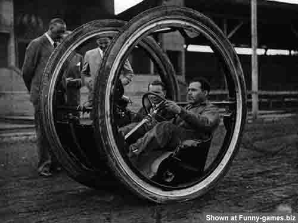

Copyright Notice
The images contained therein in the folders marked 'DaVinci' were created by and belongs to Andrew Chiou. The rights and ownership has been asserted on this day 24 June 2013. The copyright owner gives permission for the images to be used as part of the elements for assessment material for courses offered by Central Queensland University.
The images contained therein in the folders marked 'Robot' and 'Vehicles' were sourced from various internet websites. These images are not used for profit or business purposes. Its sole purpose is for education. The ownership of these images were never clearly asserted or does not exist at the time of their archival. However, all efforts were made to ensure that these images were sourced from a public domain source where the sites has been clearly been asserted as such. In the event that these images are copyighted and ownership can be evidenced, please contact Andrew Chiou (a.chiou@cqu.edu.au) and the images will be immediately removed from this archive.
